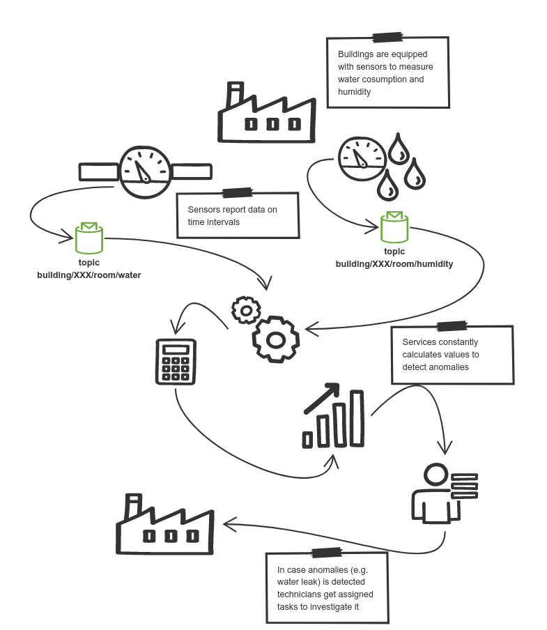

Water Leak detection
Water leak detection example service demonstrates simple anomalies detection such as water leaks based on collected sensor data.
Buildings are equipped with various sensors such as water meters, humidity and more. In this example each room in the building will report its water consumption on regular intervals - every 2 minutes. In addition to that each room will also report humidity level, again on time intervals - every 10 minutes.
Based on this data, service will perform calculation of
-
min value
-
max value
-
average value
Knowing these values anomalies can be detected by applying rules defined.
-
Humidity higher than 80% can be considered as anomaly or even potential water leak
-
water consumption within 5 consequent measurements that is higher than 100 is considered leak.
In any of the above cases technicians would be called to investigate the situation in the actual building.

| Note that this example is currently not equipped with user facing UI |
Run it
The only thing that is needed is Apache Kafka running that will be accessible.
It needs to be given as part of run command via environment variable KAFKA_SERVERS
docker run -e MQTT_SERVER= -e MQTT_PORT= -p 8080:8080 automatiko/event-streams-sensors
| To get quickly a running instance of Mosquitto to run the tests visit Docker Hub for details |
once this is done you can see the fully described service at http://localhost:8080/swagger-ui/#/
| You can open your browser http://localhost:8080/management/processes/ui to visualize your running service |
An important detail to mention is that MQTT allows to subscribe using wild cards. This feature is used in this example as it allows flexible workflow definition.
Both start events (Water measurement and Humidity measurement) subscribe to
MQTT topics using wild cards
-
building/+/+/water- this allows to receive any building’s and any room of that building water consumption data -
building/+/+/humidity- this allows to receive any building’s and any room of that building humidity data
In reality this means that every incoming sensor data to topic that matches this MQTT wildcard will either start new instance of the workflow or push data into already existing one.
Example
Humidity sensor in room 555 in building ABC will push data to building/ABC/555/humidity
topic and humidity sensor in the same building but room 123 will push data to
building/ABC/555/humidity topic.
This in turn will create two workflow (waterleasks)
instances that will be uniquely identified (so called business key)
ABC-555 and ABC-123 respectively.
This business key (ABC-555) can be used at any time to get hold of
given workflow instance with service API. It is also configurable when it
come to the format and content of the business key - in this example it
retrieves information from the actual topic data was sent to.
|
Similar water consumption data are handled. If they match the same building and room the data will be "appended" to already existing workflow instance, otherwise new instance will be started.
There are multiple paths that can be taken during detection process
Each incoming sensor data will trigger either
-
Water measurementin case it comes from water meter -
Humidity measurementin case it comes from humidity sensor
Water measurements are collected into a bucket that allows to accumulate values and perform calculation on top of items.
Humidity data is constantly replacing previous value (if there was any), so it always represents last known value.
The happy path
The happy path for humidity means humidity level below 85%. The happy path for water measurement means that there won’t be max value greater than 100.
| Water measurements are calculated every fifth value being received. |
Try it
Follow steps in the Details section to see the happy path in action.
Here are the steps to try out with happy path
-
Publish room 100 of building Main humidity data
-
Topic
building/Main/100/humidity -
Payload
-
{
"ts" : 1608570416309,
"val" : 48.0
}
-
Publish room 100 of building Main water data
-
Topic
building/Main/100/water -
Payload
-
{
"ts" : 1608570416309,
"val" : 25.0
}
Repeat water consumption data more than 5 times to see the report being calculated. At any point in time you can use service API to see current state of the active instances.
| Why the format of the payload is as it is? The main reason is that it follows MQTT SmartHome specification to provide some degree of standardisation. |
The leak detected path
The leak detected path means water measurement won’t be at any time greater than 100. This is based on report - calculated values of at least 5 data points - measurements.
As soon as there will be a value exceeding 100 for water consumption level it will trigger a task assigned to technicians. That means that there is a need for investigation on site to confirm or deny detected anomaly.
| Water measurements are calculated every fifth value being received. |
Try it
Follow steps in the Details section to see the leak detected path in action.
Here are the steps to try out with leak detected path
-
Publish room 100 of building Main water data
-
Topic
building/Main/100/water -
Payload
-
{
"ts" : 1608570416309,
"val" : 105.0
}
Repeat water consumption data more than 5 times to see the report being calculated and task assigned to technicians.
At any point in time you can use service API to see current state of the active instances. For instance to get currently assigned tasks for technicians for room 100 in building ABC issue following request
| Why the format of the payload is as it is? The main reason is that it follows MQTT SmartHome specification to provide some degree of standardisation. |
The humidity level too high path
The humidity level too high path means that at any time when humidity level is grater than 85 it will assign another task for technicians. It is rather probable that there is some kind of anomaly when humidity is too high.
Try it
Follow steps in the Details section to see the humidity level too high path in action.
Here are the steps to try out with humidity level too high path
-
Publish room 100 of building Main humidity data
-
Topic
building/Main/100/humidity -
Payload
-
{
"ts" : 1608570416309,
"val" : 88.0
}
This will create workflow instance and directly assign task for technicians.
At any point in time you can use service API to see current state of the active instances. For instance to get currently assigned tasks for technicians for room 100 in building ABC issue following request
| Why the format of the payload is as it is? The main reason is that it follows MQTT SmartHome specification to provide some degree of standardisation. |
The publish report path
Sensor data are collected for given amount of time. In this example they are set to 1 hour. After one hour from first data received for given room and a building report will be published to another MQTT topic.
The reports topic will be calculated based on the building and room it collects
data for. For example, workflow instance identified as (ABC-123 which means
it collects data for room 123 in building ABC) will publish its report to
MQTT topic reports/ABC/123/hourly.
In case you don’t want to wait for an hour to see the report being published
you can start the docker image with extra environment variable -e WATER_LEAKS_TIMER=PT5M
this will publish report after 5 minutes instead of 1 hour.
|
Try it
Follow steps in the Details section to see the humidity level too high path in action.
Here are the steps to try out with publish report path
-
Publish room 100 of building Main humidity data
-
Topic
building/Main/100/humidity -
Payload
-
{
"ts" : 1608570416309,
"val" : 48.0
}
-
Publish room 100 of building Main water data
-
Topic
building/Main/100/water -
Payload
-
{
"ts" : 1608570416309,
"val" : 25.0
}
Repeat water consumption data more than 5 times to see the report being calculated. At any point in time you can use service API to see current state of the active instances.
This will create workflow instance and directly assign task for technicians.
At any point in time you can use service API to see current state of the active instances. For instance to get currently assigned tasks for technicians for room 100 in building ABC issue following request
| Why the format of the payload is as it is? The main reason is that it follows MQTT SmartHome specification to provide some degree of standardisation. |
Another interesting aspect is that when report is published it will be consumed but another workflow that is responsible for collecting data for entire building based on published reports.
Source code
Complete source code of this example can be found in GitHub